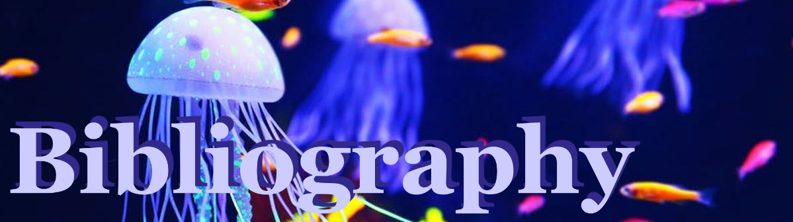

Websites
- Jellyfish facts! National Geographic Kids. (2020, June 2). Retrieved September 28, 2021, from
https://www.natgeokids.com/nz/discover/animals/sea-life/jellyfish-facts/.
- Encyclopedia Britannica, inc. (n.d.). Jellyfish summary. Encyclopedia Britannica. Retrieved September 28, 2021, from
https://www.britannica.com/summary/jellyfish.
- Jellyfish facts, Types, classification, Habitat, Diet, adaptations. Animal Spot. (2020, February 12). Retrieved September 28, 2021, from
https://www.animalspot.net/jellyfish
- Team, Family Health. “Should You Pee on a Jellyfish Sting?” Cleveland Clinic, Cleveland Clinic, 26 Oct. 2020,
https://health.clevelandclinic.org/pee-jellyfish-sting/#:~:text=Jellyfish%20tentacles%20have%20stinging%20cells,to%20release%20even%20more%20venom.
- Encyclopedia Britannica, Encyclopedia Britannica, Inc.,
https://kids.britannica.com/kids/article/jellyfish/353315#:~:text=Jellyfish%20are%20sea%20animals%20with,to%20corals%20and%20sea%20anemones.
Images
- Mahalski, Bruce. “The Five Classes of Cnidarians.” ’Corals, Anemones and Jellyfish - Cnidaria – the Nettle Animals’, Te Ara - the Encyclopedia of New Zealand, 12 June 2006,
https://teara.govt.nz/en/diagram/4722/the-five-classes-of-cnidarians. Accessed 2 Oct. 2021.
- Grieco, Valentino. "White spotted Jellyfish - Medusa a pois bianchi - stock photo" ’10 Extraordinary Jellyfish Species’, treehugger, 23 May 2021,
https://encrypted-tbn0.gstatic.com/images?q=tbn:ANd9GcSziW6BjyJL46VJeDiUJ8ACUP0TMBbvxdyMyQ&usqp=CAU. Acessed 2 Oct. 2021.
- Bell, Gary. "Jellyfish." ’Jellyfish (Phyllorhiza peronlesueuri) trio amongst stromatolites, Hamelin Pool, Western Australia, Australia’, naturepl, 26 Aug 2020,
https://www.naturepl.com/cache/pcache2/00642991.jpg.Acessed 2 Oct. 2021.
- Merriam-Webster, Inc, 2006,
https://cdn.britannica.com/82/72182-004-39F8C242.jpgAcessed 2 Oct. 2021.
- ’What Do Jellyfish Eat?’, feedingnature, 3 Nov 2929,
https://feedingnature.com/wp-content/uploads/2020/11/jellyfish.jpgAcessed 2 Oct. 2021.
- Romanov, Andrii. "beautiful jellyfish in the aquarium." Shutterstock,
https://www.shutterstock.com/image-photo/beautiful-jellyfish-aquarium-1117564055Acessed 2 Oct. 2021.


{kind=link}
{kind=link}
{kind=link}